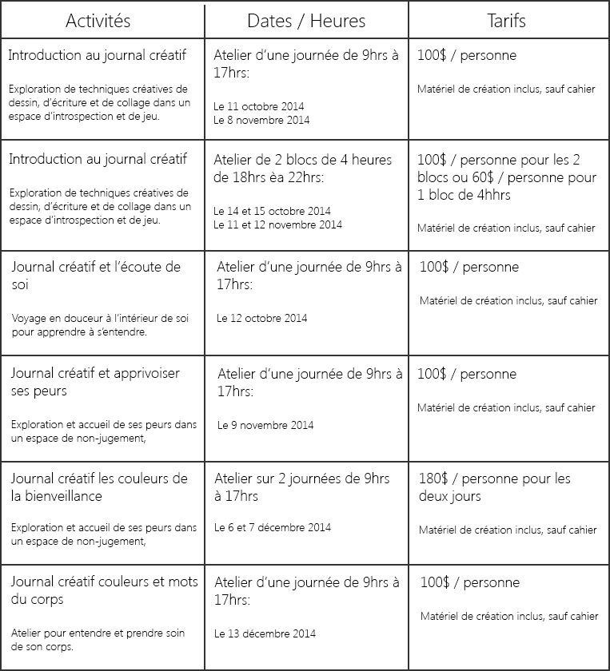
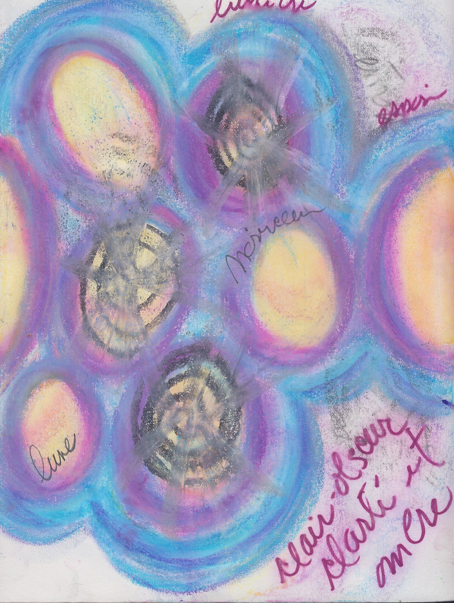

Ateliers Créatifs

À propos de l'artiste
Je suis animatrice certifiée en journal créatif depuis mai 2013, je suis aussi une artiste autodidacte et depuis 2010, j’ai reçu un diagnostic de fibromyalgie. Jusqu’à tout récemment, j’exerçais aussi comme thérapeute en relation d’aide par l’approche non-directive créatrice. Toutes ces formations professionnelles et expériences de vie combinées font de moi une personne, une artiste et une animatrice dotée d’une grande sensibilité et d’un grand respect devant la douleur et la souffrance d’autrui.
Sur le plan personnel, cet outil m’a aidé et continue au jour le jour, à établir une es souffrances avaient à me dire pour poursuivre mon processus i.e. besoin de ralentir et besoin de créer et de me créer et psychiquement, poursuivre l’exploration de mon énergie de créativité, mon énergie de vie pour mieux en comprendre le fonctionnement et me permettre d’apprivoiser les obstacles et les résistances dans ce processus.

Le Journal Créatif
Le Journal Créatif :
Le Journal Créatif mc est une méthode de connaissance de soi non- conventionnelle alliant le dessin, l’écriture, le collage et la créativité. Cette méthode, créée par Anne-Marie Jobin, s’inspire de notions de psychologie, d’art-thérapie, de diverses techniques pour stimuler la créativité et l’écriture créative. Le Journal créatif a pour objectif le développement de la personne; c’est un outil concret, flexible, facile à utiliser et accessible à tous.
Le matériel requis :
- Des crayons de bois
- Différents feutres
- Pastels secs / à l'huile
- Ciseau,colle en bâton,magazines et retailles de papier pour collage
- Banque déclencheur si désiré : images,techniques,mots,thèmes à explorer
Les languages de base:
L'écriture spontané
Le dessin spontané
Le collage spontané
Les exercices :
Réchauffement 1 : Travailler dans l'alliance du groupe
Le Journal Créatif mc est une méthode de connaissance de soi non- conventionnelle alliant le dessin, l’écriture, le collage et la créativité.
2-3 minutes
Réchauffement 2 : Travailler dans l'alliance du groupe
Le Journal Créatif mc est une méthode de connaissance de soi non- conventionnelle alliant le dessin, l’écriture, le collage et la créativité.
2-3 minutes
Exercice 3 : Travailler dans l'alliance du groupe
Le Journal Créatif mc est une méthode de connaissance de soi non- conventionnelle alliant le dessin, l’écriture, le collage et la créativité.
2-3 minutes
Exercice 4 : Travailler dans l'alliance du groupe
Le Journal Créatif mc est une méthode de connaissance de soi non- conventionnelle alliant le dessin, l’écriture, le collage et la créativité.
2-3 minutes
Exercice 5 : Travailler dans l'alliance du groupe
Le Journal Créatif mc est une méthode de connaissance de soi non- conventionnelle alliant le dessin, l’écriture, le collage et la créativité.
2-3 minutes
Période de partage et de questions - 45 min

Tarifs et horaires:
- -Apporter cahier non-ligné 8X11
- -Cahiers en vente sur place
- -Petits groupes de 6 à 8 personnes réserver tôt
- -Apportez vos lunchs pour les ateliers d'une journée
- -Thé,café et petites collations santé disponible sur place
- -Les ateliers ont lieun au 33, rue Massue à Varennes
Informations:
Témoignages:
« Cet atelier m’a permis de reconnecter avec des émotions dont je n’aurais pu en ressentir toute la profondeur autrement. Il m’a permis de retrouver le plaisir d’enfant de créer et d’être surprise par ma création. C’est un processus vivant à en explorer toutes les facettes comme la vie. Merci!!! »
- Anonyme
« Avant le journal créatif, il y avait le noir, après le journal créatif est apparue la lumière dans ma vie… » - Anonyme « Cet atelier a été pour moi une place pour me dire, exprimer des émotions, en découvrir d’autres et cheminer avec tout ça dans un endroit accueillant, réceptif et plein de compassion (de la part de l’animatrice). M’a apporté des outils et du calme, c’est un privilège d’avoir assisté à ce cours. Isabelle est vraiment excellente dans cet art. »
- Anonyme
« Moi qui suis habituée à animer des groupes d’entraide, je trouve que cette méthode est douce et porteuse de grands moments de satisfaction intérieure. Les messages qui viennent des participants sont à la fois profonds et source de joie. Les vécus douloureux peuvent s’exprimer plus facilement et de manière plus positive par le dessin et les couleurs. […] J’en ressors grandie à chaque fois. Chaque image vaut mille maux/mots. Je le (La méthode du Journal Créatif) recommande sans réserve.
– Ginette Lacourse (AFIM)
« Je voudrais dire «Merci!» car j’ai enfin pu mettre des mots sur un cri au fond de moi, pas seulement de douleur mais aussi de désir d’être présente pour moi! Cette découverte aurait pu être très longue et difficile à faire seule. Tous les exercices m’ont apportés des pistes de réflexion, ton accueil et ta grande disponibilité (de l’animatrice) ont grandement aidé. J’aurais aimé en profiter encore mais ce que j’ai appris me suivra pour toujours.
- Anonyme


- 